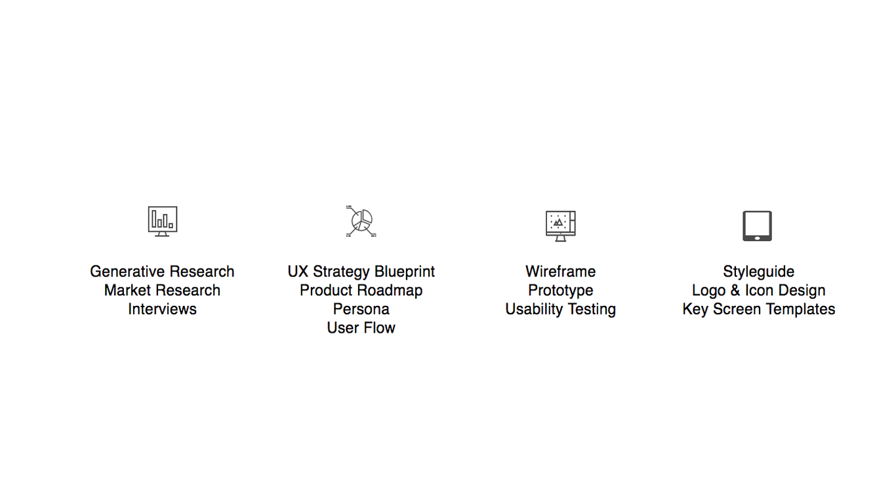

Target User
The primary users are primarily teachers or providers of training, either in the higher education sector, or those who are operating as freelancers
Goal
The goal of this app was to provide a solution for expediting a major part of the teacher workload. A typical day for most teachers is typically eaten up by meetings, new intiatives, and special projects, leaving little time to focus on the core business of students. This would allow teachers to spend more energy and time on preparing better lecturers and providing direct feedback
My Role
UX/UI Designer & Researcher

Summary
Most teachers feel that their workloads have reached a point where, in order to do their jobs well, shortcuts have to be made. And because much of this new work often comes in the form of paperwork, focus on the needs of students is often the first thing that is sacrificed.
Through the process of developing this app, it was discovered that this app would solve two problems: improve the teacher's use of time as well as providing students with faster turnaround times on their submissions. In this case, students would at least be able to have some initial feedback on their assignments.
Process
Research

Research began by looking at some of the existing technology that existed on the market for teachers. From there, it didn't take long to see that there are a number of tools that are available on the market, but nothing that would provide specific solutions around marking, the major contributor to administrative tasks and workload stress.
From there, I held interviews with six different teachers across the School of Communication & Design at a university in Vietnam. In those interviews, teachers had reported that they tend to avoid a lot of tools because of the perception that the use of phones tends to be a detriment to classroom experience, but also the fact that most tools actually create more work for them, not less.
So with that, four out of six teachers replied that they would only use a tool like this if it was simple and fast to use, and that it would in fact make a part of their job easier.
During this phase of the research, I also sat with two of the teachers and actually observed the way that they were currently handling the marking task, which almost immediately revealed a very mechanical, very paper-shifting type of approach.
So after showing them the concept I had many of them were interested.
Strategy
With all this research and useful information from teachers, there were several personas that could have been chosen. The best thing to do then was to look at the clusters of charateristics from each of them to develop a unifying persona. Here is what came out:

From there, we began the work of looking at how the layout of the user experience would begin with the initial steps into the Information Architecture. Given that the primary mandate from teachers was that it had to be easy to use and have obvious value add to their jobs, much of site was built with global navigation that could allow the user to revert or navigate around the app with little confusion or thought.
User Flow
What we can derive from this flow is simple: users are going to be able to find the work that needs marking without navigating the page, but if they want to, they are completely free to pass through all the courses and current assignments if they wish; this provides them with maximum flexibility.
Interaction & UI Design

Getting the initial wireframes up took longer than we thought, as we had to consider not only the user flow, but what would be the most convenient path for our main stakeholders who were still on the fence about adopting this product.In the end,however, this is what we came up with.
Usability and Prototyping
Usability Testing confirmed our belief at this point: we had built something that made sense to the user and was easy to use. Earlly iterations of the testing were a little bit rought, but much of that was due to the fact that users were not that familiar with low-fidelity mockups of the site, so there was some basic issues with navigation. Prototyping is also an area people are not that used to as well, so getting a feel for the limitations of a site such as that was also a consideration. You can find more information about the prototype here.
Reflection
This is a very usable product for Educators. I think that early adopters would be keen to find ways to save time, but getting further on board will probably take some marketing to attract the attention to the users. Beyond reducing workloads, I think that this also has a very practical application for freelancers that should be looked at closely.